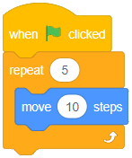
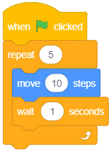

Activity 5: Using a repeat ( ) loop in a program
Create a program that moves a sprite 10 steps forward 5 times.
Steps
- 1. From the Event block, choose the when green flag clicked block.
- 2. From the Control block, choose the repeat ( ) block.
- 3. Add the number of times the loop should repeat inside the brackets of the repeat ( ) block.
- 4. Add the code to repeat inside the body of the repeat ( ) block.
- 5. Click the green flag to start the program. You will observe the sprite move 10 steps forward five times. Observe Figure 7 (a).
- 6. Add a wait (1) seconds block to clearly observe the sprite movement. Observe Figure 7 (b).
Code blocks

(a)

(b)